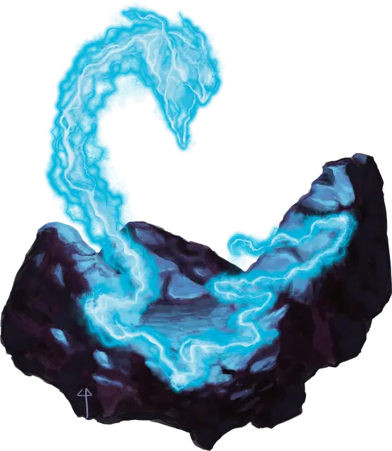

Ожившая молния
Living Lightning Bolt
Большой Конструкт, без мировоззрения

Класс Доспеха 15 (природный доспех)
Хиты 57 (6к10 + 24)
Скорость 25 футов, летая 25 футов
| мод | спас | ||
|---|---|---|---|
| СИЛ | 10 | +0 | +0 |
| ЛОВ | 15 | +2 | +2 |
| ТЕЛ | 18 | +4 | +4 |
| мод | спас | ||
|---|---|---|---|
| ИНТ | 3 | −4 | −4 |
| МДР | 10 | +0 | +0 |
| ХАР | 10 | +0 | +0 |
Сопротивление урону дробящий, колющий, рубящий от немагических атак
Иммунитет к урону электричество
Иммунитет к состояниям ослепление, отравление, сбивание с ног, захват, очарование, глухота, испуг, истощение
Чувства тёмное зрение 60 футов, пассивное Восприятие 10
Опасность 5 (1800 опыта)
Бонус мастерства +3
Особенности
Аморфность. Живое заклинание может перемещаться в пространстве в один дюйм шириной, не протискиваясь.
Сопротивление магии. Живое заклинание имеет преимущества на спасброски от заклинаний.
Создание живого заклинания. Ожившие заклинания бывают нескольких видов. Ниже представлены 3 примера. Ожившие заклинания чаще всего появляются из заклинаний школы Вызова и Воплощения. Чтобы создать живое заклинание из другого заклинания, выберите заклинание до 5-го уровня, относящееся к школе Вызова или Воплощения из списка заклинаний волшебника. Далее обратитесь к таблице создания заклинаний, чтобы узнать, какой блок характеристик нужно изменить, основываясь на уровне выбранного заклинания.
Таблица создания заклинаний.
| Уровень заклинания | Блок характеристик для изменений |
| 1-2 | Ожившие огненные ладони |
| 3-4 | Ожившая молния |
| 5 | Ожившее облако смерти |
Далее сделайте следующие изменения в блоках характеристик:
Иммунитет к урону. Замените иммунитет к урону живого заклинания иммунитетом к типу (или типам) урона, наносимого выбранным заклинанием.
Магический удар. Замените урон, который наносит магический удар на один из видов урона, наносимого выбранным заклинанием.
Имитация заклинания. Замените эффект Заклинания мимикрии на эффект выбранного заклинания. Если это заклинание требует совершение спасброска, используйте Сл спасброска от выбранного заклинания. Если заклинание имеет бросок атаки, используйте бонус атаки от Магического удара живого заклинания.
Например, если вы превратите огненный шар (заклинание 3-го уровня) в живое заклинание, изменяйте живую молнию. Живой огненный шар обладает иммунитетом к урону огнём, но не к урону от электричества; наносит урон огнём своим магическим ударом; и воспроизводит огненный шар с помощью Имитации заклинания.
Действия
Мультиатака. Живое заклинание совершает два магических удара.
Магический удар. Рукопашная атака заклинанием: +7 к попаданию, досягаемость 5 футов, одна цель. Попадание: 21 (5к6+4) урона электричеством.
Имитация заклинания (Перезарядка 5-6). Живое заклинание формирует линию длиной 100 футов и шириной 5 футов, вылетающую в выбранном вами направлении. Все существа в линии должны совершить спасбросок Ловкости Сл 15. При провале существо получает 28 (8к6) урона электричеством, или половину урона при успехе.
Описание
Из всех аномалий, возникших в результате магического катаклизма, создавшего Земли Скорби, появление живых заклинаний является самым загадочным. Каким-то неведомым образом магическая энергия, высвобожденная во время Последней Войны, заставила эффекты заклинаний обрести разум. Живое заклинание очень похоже на обычный эффект заклинания, за исключением того, что его магическая энергия бесконечно возобновляется. Ожившие заклинания заполоняют Земли Скорби и другие области, разрушенные Последней Войной, каким-то образом подпитываясь от окружающей магической энергии. Хотя они не нуждаются в пище, они нападают на любых существ, с которыми вступают в контакт, без разбора атакуя их испорченной магией.
Природа конструкта. Живое заклинание не нуждается в воздухе, еде, воде или сне.